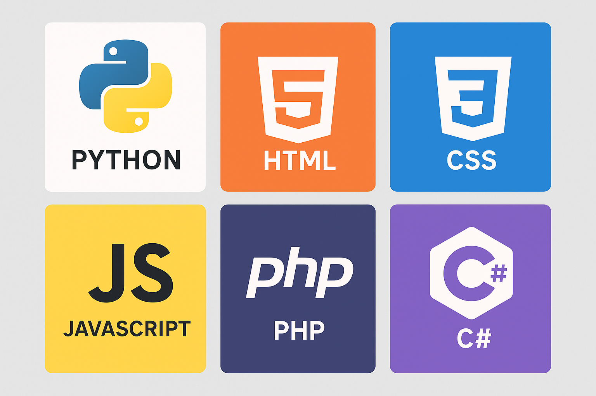
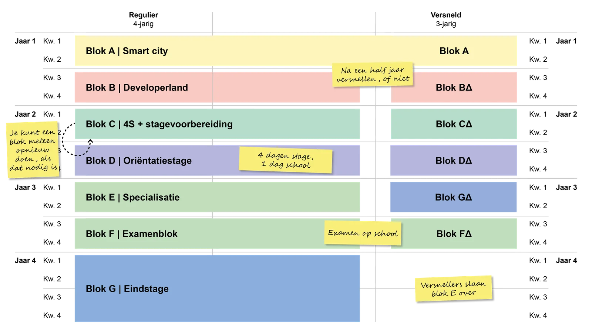
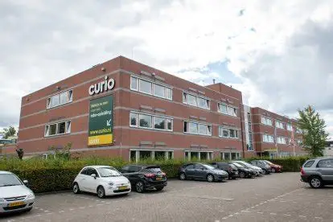

Dit zijn de talen die je zal leren bij de 1ste jaar van je opleiding.

Dit is een voorbeeld van het rooster dat je zal krijgen in het eerste jaar van je opleiding. De vakken zijn: Mentor_uur: LOB, Codelab: Opdrachten inhalen of zelfstandig werken, PRO/PRA: Praktijkles (werken aan projecten), WEB: Webdevelopment (websites bouwen en programmeren), NATIVE: Python, Java, C# (applicaties bouwen en programmeren), Engels, Nederlands
Je opleiding is verdeeld in 8 blokken van 10 weken. In elk blok krijg je verschillende vakken. in blok 4, 7 en 8 heb je alleen maar stage
Bij Curio Software Development leer je programmeren en software ontwikkelen op een manier die echt praktisch is. We werken met moderne technologieën, van web- en app-development tot programmeren in projecten. Je leert niet alleen de theorie, maar vooral hoe je die kunt toepassen in echte situaties. Bij ons draait het om innovatie, samenwerken en jezelf ontwikkelen, zodat je klaar bent voor een succesvolle carrière in de IT.
Docent
Docent
Docent
Docent